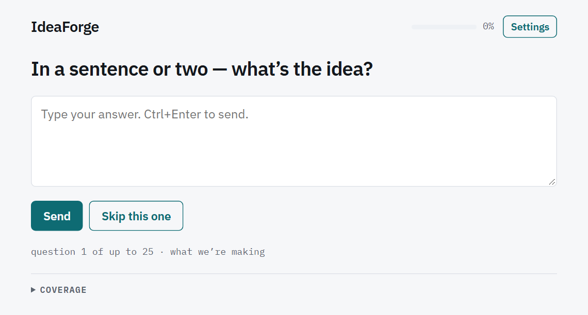

First run
Start with the idea, not a perfect prompt.
Choose where the questions should come from, give IdeaForge a rough opening statement, and answer one focused question at a time. The app saves the conversation on this device and writes the result as portable Markdown.

In a sentence or two — what’s the idea?A rough statement is enough to begin.
Before you start
| Item | What to prepare |
|---|---|
| The app |
Open the hosted app, an installed copy, or a locally served copy. Do not
open index.html with file://; modules, IndexedDB,
and the service worker need a real web origin.
|
| A question provider | Choose a hosted provider, a supported local model server, or the built-in Claude viewer option when it is available. See Providers for the differences. |
| Credentials or a local model | Hosted providers normally need an API key. Local providers need a loopback server address and a model name. Use a scoped, expiring API key rather than a primary account key. |
| Voice, if wanted | Dictation is optional. You can use a working browser recogniser, configure hosted transcription, or choose keyboard only. |
Configure the setup screen
- Choose where the questions come from. Pick an inference provider from the first list. The fields below change to match: hosted providers show an API-key field; local providers show a server address and model field.
-
Enter the required connection details.
Paste the provider key, or enter the local server and model. A local address must
use
localhostor127.0.0.1. On a phone, those names mean the phone itself, not a computer on the same network. - Choose dictation behaviour. Leave the browser recogniser selected, choose one of the hosted transcription services and supply its key, or select Off — keyboard only. The hands-free finish word can also be changed here.
- Test the connection. Use Check the key for a hosted provider. For a local provider, Check the connection asks the server for its installed models; if the list endpoint is unavailable, you can still type a known model name.
- Start the interview. IdeaForge stores the selected provider settings on this device, creates a new local session, and opens the seed question immediately.
Provider credentials are kept separately from interview records. API keys are encrypted at rest in this browser, while non-secret preferences such as the hands-free finish word are stored as device preferences. For the threat model and exact limits of browser storage, read Privacy and security.
Answer the first question
Describe the idea in your own words. It can be incomplete: the point of the interview is to find the missing specifics. Press Send, or use Ctrl+Enter on Windows and Linux or Command+Enter on macOS. A plain Enter remains available for paragraphs.
After the opening answer, IdeaForge asks a follow-up grounded in the conversation. Each screen contains one question, an optional short bridge from the previous answer, and sometimes suggestion chips that show possible answer shapes.
Use suggestion chips as starting points
Selecting a chip copies its text into the answer box; it does not submit it. Edit the wording until it reflects what you mean, then send it. An unedited chip is treated as model-supplied wording and cannot by itself move a coverage area all the way to covered.
Skip rather than invent
Use Skip this one when you cannot or do not want to answer. The transcript records a real skip rather than pretending you supplied an answer, and the interviewer moves on.
Leave an unfinished answer safely
Text in the answer box is saved after a short pause and is flushed before IdeaForge opens Settings or the Ideas library. Returning to the conversation restores that draft. If browser storage fails, the app reports that the session could not be saved and tells you to export before closing the tab.
Follow the interview without managing it
- The progress meter shows coverage, not a countdown or a quality score.
- The line below the controls shows the question number and current dimension.
- Coverage expands to show what is thin, partial, or covered.
- not relevant removes a dimension from later questions.
- The write-up button appears after the early part of the interview, so you can stop by choice.
You can write the idea up as soon as the button appears, or continue until the app says there is enough material. The engine also has exhaustion and turn limits so an interview cannot circle for ever. See Interviews and coverage for the full stopping rules.
Create and use the result
- Select That’s enough — write it up, or accept the spoken wrap offer in hands-free mode.
- IdeaForge makes one final model request for a refined prompt, a short title, explicit assumptions, and unresolved questions.
- Review the Markdown. It also contains a coverage table and the full transcript, including skipped and dictated answers.
- Use Share .md, Copy markdown, or Download .md. Choose Ask me more to reopen the same idea, or New idea to return to setup.
Know what is saved where
| Data | Location and behaviour |
|---|---|
| Interviews and answer drafts | IndexedDB in the current browser profile; visible through Ideas. |
| Provider and transcription credentials | Encrypted in IndexedDB; removed by Forget my key. |
| Finish word and hands-free preference | Local device preferences; forgetting a key does not reset them. |
| Downloaded Markdown or JSON backups | Ordinary files outside the app, wherever your browser saves or shares them. |
There is no IdeaForge account and no automatic cross-device sync. Before clearing site data or changing devices, use the procedures in Ideas library.